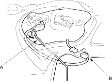
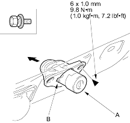

- Remove these items:
- Disconnect the cylinder rod (A) and if equipped, disconnect the cylinder switch connector (B) and detach it from the tailgate.

- From outside the tailgate, remove the bolt securing the lock cylinder (A). From inside the tailgate, pull the lock cylinder out by releasing the hook (B).
Fastener Location  : Bolt, 1
: Bolt, 1

- Install the lock cylinder in the reverse order of removal and note these items:
- Make sure the connector is plugged in properly (for some models).
- Make sure the tailgate opens properly and locks securely.